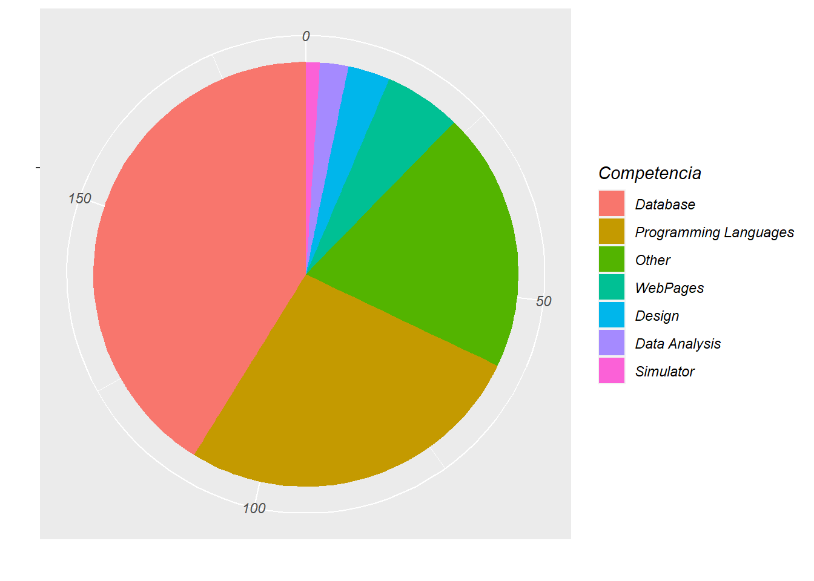

Capítulo 6 Clustering
Convertimos el dataframe a numérico otra vez porque sino no funciona
Emple01 <- Emple01 %>% mutate_all(as.numeric)
Vamos a ver cuántos clusters deberíamos usar para nuestros datos

Nos dice que deberíamos usar alrededor de 10 clusters pero si miramos la distribución espacial de los datos…

Vemos que es un grupo muy homogéneo menos cuatro personas Haider Abdullah, Shafeeque, Mary Rathna y Athulya Kp que los podemos considerar como outliers
auxi2 <- 0
for (x in c(1:length(rownames(Emple01)))) {
auxi <- (Emple01 %>%
select(which(Emple01 %>% slice(x) == 1)) %>%
sapply(sum))/length(rownames(Emple01))
auxi2 <- c(auxi2,mean(auxi))
}
auxi <- as.data.frame(list(
Nombres = rownames(Emple01),
Medias = auxi2[-1]
))
auxi %>%
arrange(Medias) %>%
slice(1:5)Aquí lo que hacemos es coger persona por persona y ver qué variables tienen a uno, se miran todas las personas que también tengan a uno esa y se suman y se dividen por el total. Así hacemos un promedio y vemos que efectivamente 3 de las 4 personas que hemos dicho salen en ese promedio así que las quitamos del dataframe
Emple01 <- Emple01 %>%
slice(-c(grep("Haider Abdullah", rownames(Emple01)),
grep("Shafeeque", rownames(Emple01)),
grep("Mary Rathna K M", rownames(Emple01)),
grep("Athulya kp", rownames(Emple01))))